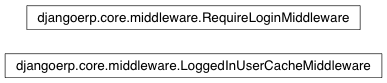

middleware¶

-
class
djangoerp.core.middleware.LoggedInUserCacheMiddleware[código fonte]¶ Initialize the user attribute of the LoggedInUserCache class.
-
static
process_request(request)[código fonte]¶
-
static
-
class
djangoerp.core.middleware.RequireLoginMiddleware[código fonte]¶ Wraps the login_required decorator around matching URL patterns. To use, add the class to MIDDLEWARE_CLASSES and define LOGIN_REQUIRED_URLS and LOGIN_REQUIRED_URLS_EXCEPTIONS in your settings.py.
For example:
LOGIN_REQUIRED_URLS = ( r'/topsecret/(.*)$', ) LOGIN_REQUIRED_URLS_EXCEPTIONS = ( r'/topsecret/login(.*)$', r'/topsecret/logout(.*)$', )
LOGIN_REQUIRED_URLS is where you define URL patterns; each pattern must be a valid regex.
LOGIN_REQUIRED_URLS_EXCEPTIONS is, conversely, where you explicitly define any exceptions (like login and logout URLs).
(Inspired by <http://www.djangosnippets.org/snippets/1220/>)-
process_view(request, view_func, view_args, view_kwargs)[código fonte]¶
-